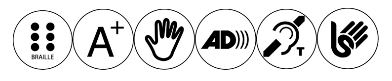
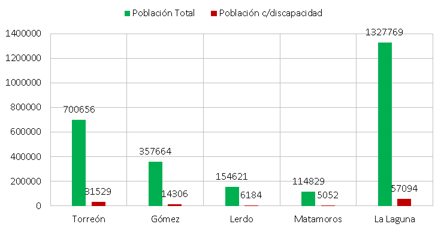
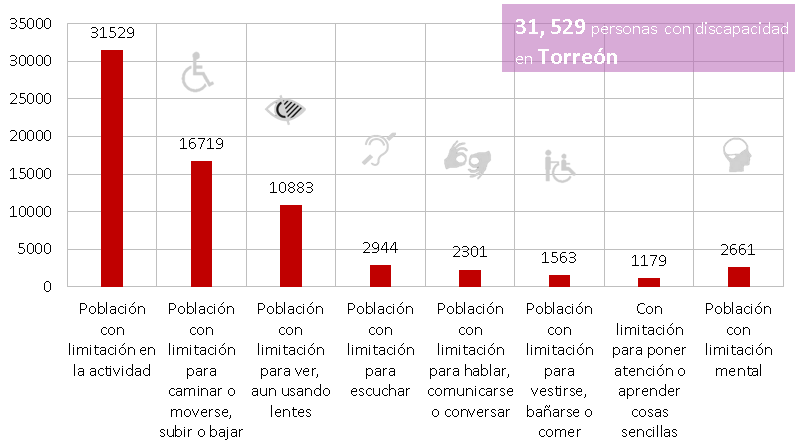

La Zona Metropolitana de La Laguna como muchas regiones del país requiere que sus espacios públicos sean incluyentes y universalmente accesibles. Una de las necesidades detectadas en el Plan Estratégico para Torreón con enfoque Metropolitano TRC2040, es generar estrategias para que los diferenes usuarios del espacio público con alguna discapacidad, tengan un libre y cómodo desplazamiento.
De acuerdo con el INEGI en el 2010 alrededor de 5 millones 739 mil 270 personas tienen algún tipo de discapacidad, que representa el 5.1% de la población total en México.
Según la Clasificación Internacional del Funcionamiento, de la Discapacidad y de la Salud, la discapacidad se define, como:
"Las personas que tienen una o más deficiencias físicas, mentales, intelectuales o sensoriales y que al interactuar con distintos ambientes del entorno social pueden impedir su participación plena y efectiva en igualdad de condiciones a las demás".
La mayoría de estas personas, se enfrentan a diversos obstáculos en su vida cotidiana y en diferentes ocasiones sufren hasta situaciones de discriminación, desde un aspecto muy simple como el acceso a un servicio básico, hasta una falta de integración completa en la sociedad.
Es por ello, que la accesibilidad es un aspecto del diseño urbano que afecta a toda la población. Por tal motivo se deben tomar en cuenta el uso y disfrute de los espacios públicos desde una amplia perspectiva y que contemple la complejidad humana.
Personas con discapacidad en Torreón
El porcentaje de la población total con alguna limitación motriz, visual, auditivo, habla y/o cognitivas en la Zona Metropolitana de La Laguna es de 4.3 %; lo que representa un total de 57,094 personas, siendo para Torreón 31,529, 14,306 en Gómez Palacio, 6,184 en Lerdo y 5,052 en Matamoros. (INEGI, 2010)
En Torreón, el 4.5% representa el porcentaje de la población que vive con algún tipo de discapacidad. Donde 53% de la población tiene una limitación para caminar o moverse, 34% están limitados visualmente, 9% están limitados para escuchar, 7% están limitados para comunicarse/hablar, 4% de la población está limitada para vestirse, bañarse o comer, 3% tiene limitación para poner atención y el 8% representa la población con limitación mental.
Lo que originó su situación, puede ser atribuido a diferentes causas, como la consecuencia de un accidente, una enfermedad adquirida, edad avanzada o bien, haberla padecido desde su nacimiento.
La vida de una persona con discapacidad es compleja, dentro de los principales retos que enfrentan, es la movilidad, ya que en la ZML no se cuenta con una infraestructura adecuada para su desplazamiento, es muy escasa la disposición de espacios adecuados para las personas con alguna limitación y muchas veces carecen de las condiciones para ser funcionales, además de que no todos los tipos de limitaciones están atendidas en el espacio (auditivo, visual o intelectual).
El factor cultural es otro reto a atender, ya que es común ver que utilizan los espacios exclusivos para personas con discapacidad, así como el bloqueo de rampas por estacionar el coche.
Por todo esto, es latente la necesidad de generar proyectos que promuevan la rehabilitación de los espacios públicos de la Zona Metropolitana de la Laguna, para hacerlos incluyentes y universalmente accesibles.
Se deben generar estrategias que consideren a los diferentes usuarios y que permitan su libre desplazamiento, como el uso de materiales con contrastes cromáticos, y de texturas, medidas específicas para personas con discapacidad auditiva, bucles magnéticos, pavimentos táctiles y una señalización accesible y comprensible, elementos de cambio de nivel como desniveles, así como en la señalización de inmediación a puntos de peligro, elementos Braille, elementos con letras ampliadas o ayudas ópticas, así como audio descripción.
Ejemplos de señalización accesible

Personas con discapacidad en la ZML

- Principales resultados por localidad (ITER). Censo de Población y Vivienda 2010 INEGI.
- Estimaciones realizadas en base a INEGI 2010, CONAPO 2016.
Personas con discapacidad y tipo de discapacidad

- Principales resultados por localidad (ITER). Censo de Población y Vivienda 2010 INEGI
- Estimaciones realizadas en base a INEGI 2010, CONAPO 2016
- Nota: La suma de porcentaje no es igual al 100% debido a la población que padece más de una discapacidad, así mismo, la suma de la población puede considerar duplicidad por la misma razón.